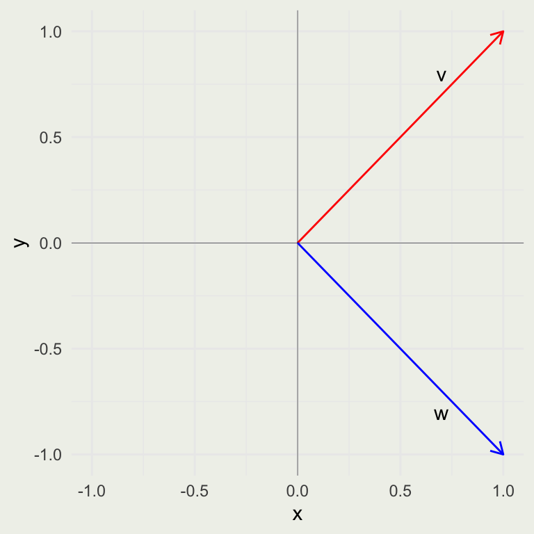
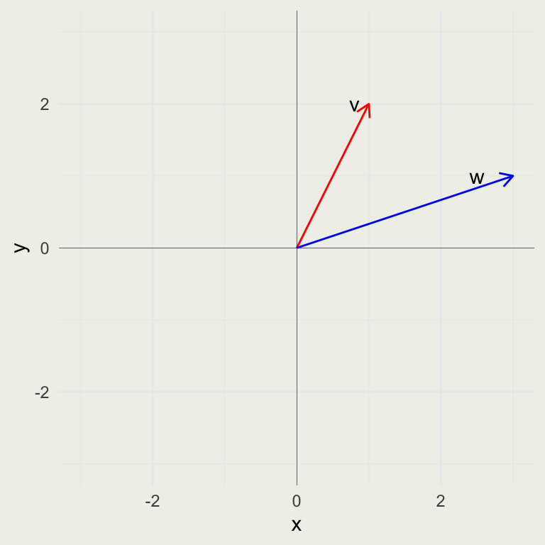
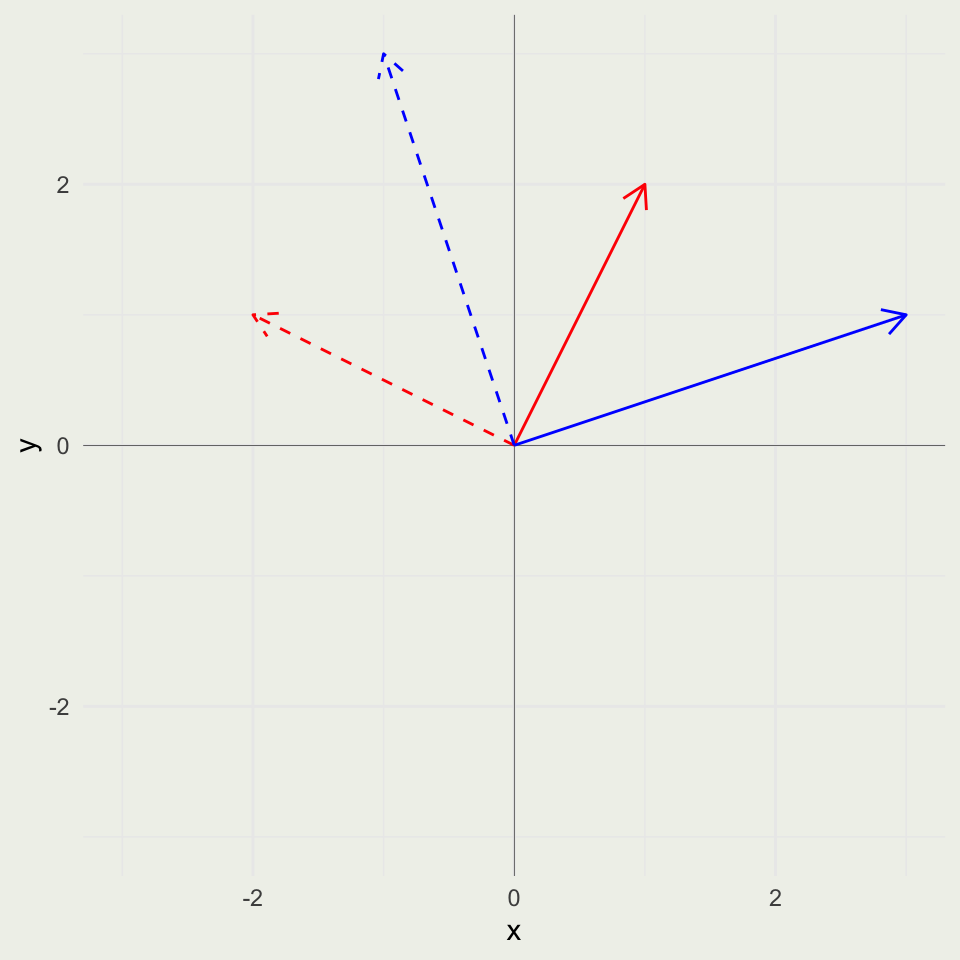
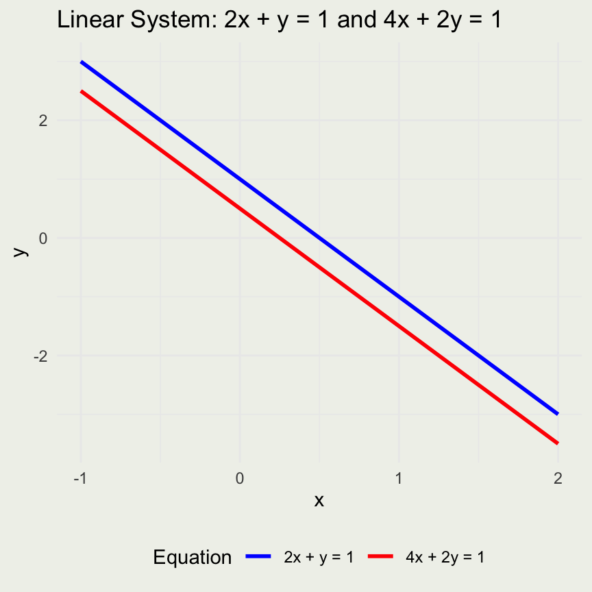
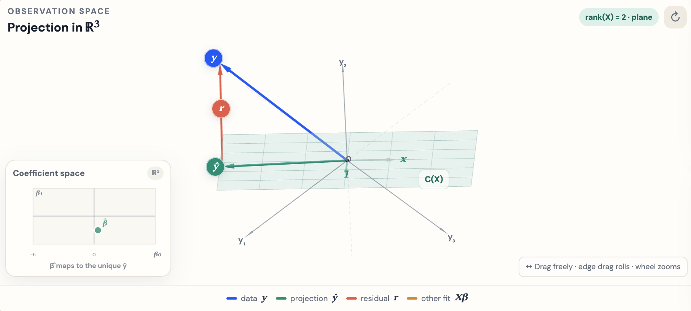
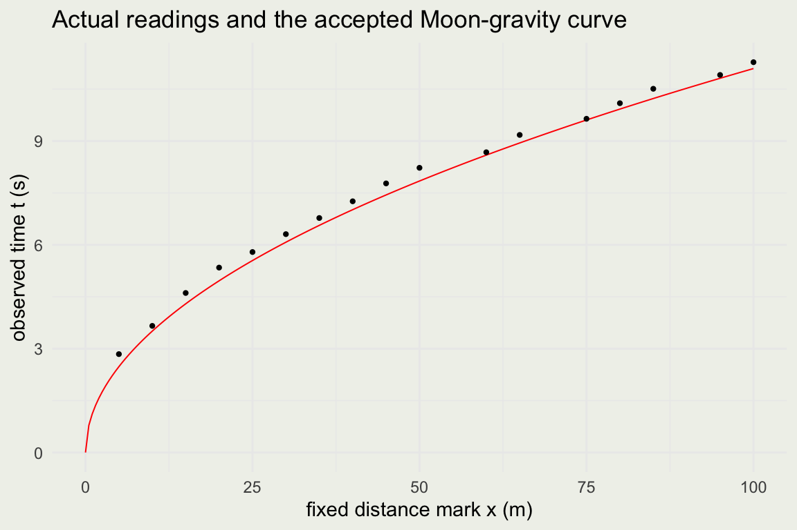
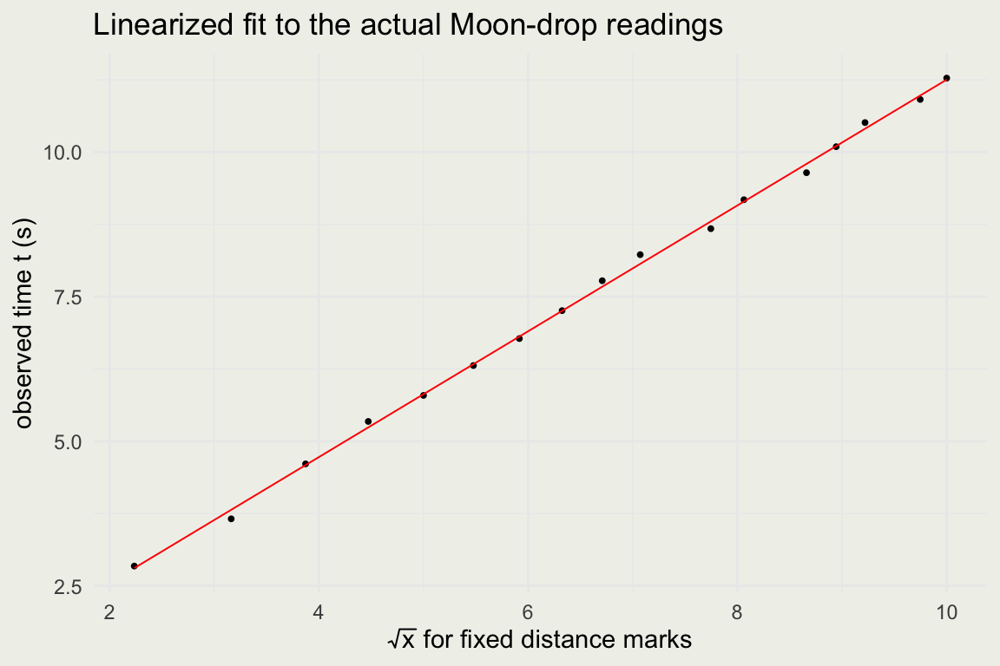

[1] 3 1 2[1] "integer"APSTA-GE 2006: Applied Statistics for Social Science Research
Inspiration for a lot of the examples came from the Essense of Linear Algebra by 3blue1brown
\[ \DeclareMathOperator{\E}{\mathbb{E}} \DeclareMathOperator{\P}{\mathbb{P}} \DeclareMathOperator{\V}{\mathbb{V}} \DeclareMathOperator{\L}{\mathscr{L}} \DeclareMathOperator{\I}{\text{I}} \]
c() function or generated random numbers with, say runif() functionR reports the \(v\) is an integer vector
You can add two vectors in a usual way, elementwise:
%*%, not *, which will produce a component-wise multiplication, not a dot product\[ v^T w = v_1w_1 + v_2w_2 + \cdots + v_nw_n \]

\[ ||v|| = \sqrt{v \cdot v} = \sqrt{v_1^2 + v_2^2 + \cdots v_n^2} \]
\[ v = \left[ \begin{matrix}1\\2\end{matrix} \right] w = \left[ \begin{matrix}3\\1\end{matrix} \right] \]

\[ R = \begin{bmatrix} 0 & -1 \\ 1 & 0 \end{bmatrix} \]
\[ Rv = \begin{bmatrix} 0 & -1 \\ 1 & 0 \end{bmatrix} \begin{bmatrix} 1 \\ 2 \end{bmatrix} = 1 \begin{bmatrix} 0 \\ 1 \end{bmatrix} + 2 \begin{bmatrix} -1 \\ 0 \end{bmatrix} = \begin{bmatrix} 0 \\ 1 \end{bmatrix} + \begin{bmatrix} -2 \\ 0 \end{bmatrix} = \begin{bmatrix} -2 \\ 1 \end{bmatrix} \]
The resulting matrix \(K\), has the correctly rotated \(v\) in the first column and rotated \(w\) in the second column.
Another way to think about this operation is to encode two transformations in \(K'\) — the \(K\) transformation followed by the \(R\) transformation. We can now use the resulting \(K'\) matrix and apply these two transformations in one swoop to any vector in \(R^2\).
Think about why matrix multiplication, in general, does not commute — \(RK \neq KR\)

Your Turn: Come up with a 90-degree clockwise rotation matrix and show that it sends \((2, 2)\) to \((2, -2)\)
Now pick three vectors in \(R^2\) and rotate all three at the same time
\[ 2x + y = 1 \\ 4x + 2y = 1 \]

\[ \begin{eqnarray} Ax & = & b \\ A^{-1}Ax & = & A^{-1}b \\ x & = & A^{-1}b \end{eqnarray} \]
solve(A) inverts the matrix, and solve(A, b) solves \(Ax = b\).\[ \begin{eqnarray} 3x + 2y + 1.5z & = & 4 \\ 7x + y & = & 2 \\ 3y + 2z & = & 1 \end{eqnarray} \]
solve() function, and validate that the results are correctIf you put on socks and then shoes, the first to be taken off are the ____
— Gilbert Strang (discussing the order of undoing the inverse)
\[ (ABC \dots)^{-1} = \dots C^{-1}B^{-1}A^{-1} \\ (A^T)^{-1} = (A^{-1})^T \\ (A + B)^T = A^T + B^T \\ (ABC \dots)^T = \dots C^T B^T A^T \]
For a complete list, see the Matrix Cookbook
If we can not reach \(y\), we need to find a vector in the column space of \(X\) that is closest (in a certain sense) to \(y\)
The projection of \(y\) onto this plane gives us the answer

Image from Introduction to Linear Algebra, Boyd and Vandenberghe
\[ X^T(y - X\hat{\beta}) = 0 \]
\[ \begin{eqnarray} X^T(y - X\hat{\beta}) & = & 0 \\ X^TX\hat{\beta} & = & X^Ty \\ (X^TX)^{-1}(X^TX)\hat{\beta} & = & (X^TX)^{-1}X^Ty \\ \hat{\beta} & = & (X^TX)^{-1}X^Ty \end{eqnarray} \]
[,1] [,2]
[1,] 2 1
[2,] 5 4
[3,] 3 6 [,1] [,2]
[1,] 38 40
[2,] 40 53 [,1] [,2]
[1,] 0.13 -0.10
[2,] -0.10 0.09 [,1] [,2]
[1,] 1 2
[2,] 2 4
[3,] 3 6 [,1] [,2]
[1,] 14 28
[2,] 28 56
The marks \(x_i\) are fixed; let \(\alpha\) be a constant stopwatch delay
Model the observed time as \[ t_i=\alpha+\sqrt{\frac{2x_i}{g}}+\varepsilon_i, \qquad \E(\varepsilon_i)=0. \]
Set \(z_i=\sqrt{x_i}\) and \(\beta=\sqrt{2/g}\) to obtain \[ t_i=\alpha+\beta z_i+\varepsilon_i. \]
With \(\boldsymbol\theta=(\alpha,\beta)^\mathsf{T}\), the matrix model is \[ \mathbf{t}=X\boldsymbol\theta+\boldsymbol\varepsilon, \qquad X=\begin{pmatrix} 1 & \sqrt{x_1}\\ \vdots & \vdots\\ 1 & \sqrt{x_{20}} \end{pmatrix}. \]
Recover gravity from the slope: \(\hat g=2/\hat\beta^2\)
[1] 20[1] 2.632638 3.965949 4.501015 5.169389 intercept sqrt_x
[1,] 1 2.236068
[2,] 1 3.162278
[3,] 1 3.872983
[4,] 1 4.472136 [,1]
[1,] 2.632638
[2,] 3.965949
[3,] 4.501015
[4,] 5.169389 [,1]
intercept 0.1896
sqrt_x 1.1206delay g
0.190 1.593 (Intercept) sqrt(x)
0.189601 1.120609 fit_data <- transform(
moon_drop,
t_hat = delay_hat + beta_hat * sqrt_x
)
ggplot(fit_data, aes(sqrt_x, t_obs)) +
geom_point(size = 0.7) +
geom_line(aes(y = t_hat), color = "red", linewidth = 0.35) +
xlab(expression(sqrt(x) ~ "for fixed distance marks")) +
ylab("observed time t (s)") +
ggtitle("Linearized Moon-drop model with delay")
mtcarsmpg against wt, treating mpg as the output variable \(y\). (We generally don’t like to use the words dependent vs. independent in this context)lm